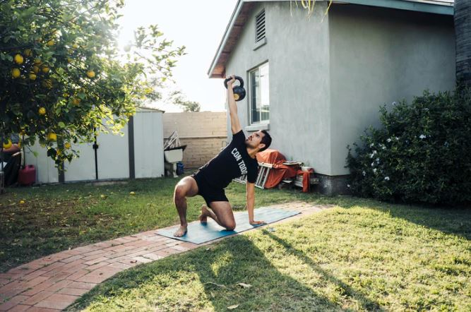

Olahraga Murah Di rumah

Olahraga adalah salah satu aktivitas yang sangat penting bagi kesehatan kita. Namun, banyak orang merasa kesulitan untuk berolahraga karena alasan biaya atau waktu. Jika Anda juga mengalami hal yang sama, jangan khawatir, Anda dapat melakukan olahraga murah di rumah.
Berikut gerakan olahraga dirumah sangat sederhana, namun sangat efektif bagi Anda yang ingin memiliki tubuh sehat dan bugar. Berikut beberapa olahraga yang bisa Anda lakukan dirumah:
1. Jogging di tempat
Jogging di tempat adalah salah satu olahraga murah yang sangat mudah untuk dilakukan. Anda hanya membutuhkan sepatu olahraga dan tempat yang cukup untuk berlari di tempat. Anda dapat melakukan jogging di depan televisi atau di halaman belakang rumah Anda. Melakukan jogging di tempat dapat membantu meningkatkan stamina dan membakar kalori.
2. Senam aerobik
Senam aerobik adalah olahraga murah yang dapat dilakukan di rumah. Anda hanya perlu menonton video senam aerobik di internet atau membeli DVD senam aerobik dan melakukannya di rumah. Senam aerobik dapat membantu meningkatkan keseimbangan, fleksibilitas, dan kekuatan otot.
3. Skipping
Skipping atau melompat tali adalah olahraga murah yang sangat efektif untuk membakar kalori dan meningkatkan stamina. Anda hanya perlu membeli tali skipping yang murah dan mulai melompat. Melakukan skipping secara teratur dapat membantu meningkatkan kesehatan jantung dan meningkatkan koordinasi mata dan tangan.
4. Yoga
Yoga adalah olahraga murah yang dapat dilakukan di rumah. Anda hanya perlu membeli matras yoga yang murah dan menonton video yoga di internet atau membeli DVD yoga. Yoga dapat membantu meningkatkan fleksibilitas, keseimbangan, dan memperkuat otot.
Demikianlah beberapa contoh olahraga murah yang dapat dilakukan di rumah. Dengan melakukan olahraga ini secara teratur, Anda dapat meningkatkan kesehatan dan kebugaran Anda tanpa harus mengeluarkan biaya besar atau pergi ke gym. Ingatlah untuk selalu berkonsultasi dengan dokter atau ahli kesehatan sebelum memulai program olahraga baru.
Makanan Sehat Sangat Penting Untuk Tubuh
Makanan sehat sangat penting untuk tubuh kita karena memberikan nutrisi yang dibutuhkan untuk menjaga kesehatan dan kebugaran tubuh. Nutrisi yang terkandung dalam makanan sehat adalah karbohidrat, protein, lemak, vitamin, mineral, dan serat. Makanan sehat juga dapat membantu mencegah berbagai macam penyakit seperti obesitas, diabetes, dan penyakit jantung.
Makanan sehat yang harus dikonsumsi adalah makanan yang seimbang dan bervariasi. Makanan seimbang terdiri dari beberapa jenis makanan yang berbeda, seperti karbohidrat, protein, lemak, sayuran, buah-buahan, dan susu atau produk susu. Makanan bervariasi mengacu pada berbagai jenis makanan dalam setiap jenis makanan tersebut, seperti kacang-kacangan, daging, ikan, dan biji-bijian.
Karbohidrat adalah sumber energi utama bagi tubuh kita. Karbohidrat yang sehat seperti roti gandum, nasi merah, kentang, dan biji-bijian, mengandung serat yang membantu menjaga kadar gula darah dan mencegah obesitas. Protein sangat penting untuk pembentukan otot dan jaringan tubuh lainnya. Sumber protein sehat seperti daging tanpa lemak, ikan, kacang-kacangan, dan telur membantu memperbaiki sel dan jaringan tubuh serta membantu membangun otot dan menjaga kekuatan fisik.
Lemak adalah sumber energi yang penting bagi tubuh kita, tetapi harus dikonsumsi dengan seimbang. Lemak sehat seperti omega-3 dan omega-6 yang terdapat dalam ikan, alpukat, dan kacang-kacangan dapat membantu menjaga kesehatan jantung dan meningkatkan fungsi otak. Sedangkan lemak tak sehat seperti lemak jenuh dan trans yang terdapat pada makanan cepat saji dan makanan olahan, dapat meningkatkan risiko obesitas dan penyakit jantung.
Sayuran dan buah-buahan adalah sumber vitamin dan mineral yang penting bagi tubuh kita. Makanan sehat ini juga kaya akan serat, yang membantu meningkatkan kesehatan pencernaan dan menjaga berat badan. Susu atau produk susu juga penting untuk kesehatan tulang karena mengandung kalsium dan vitamin D.
Makanan sehat sangat penting untuk tubuh kita dan harus menjadi bagian dari gaya hidup sehat yang dijalani. Menjaga pola makan yang sehat dan berolahraga secara teratur dapat membantu kita mempertahankan kesehatan dan kebugaran tubuh yang optimal. Dalam memilih makanan, pastikan untuk memilih makanan yang sehat dan mengonsumsinya dalam jumlah yang tepat agar kita dapat mencapai gaya hidup sehat yang optimal.
Tidur Dibutuhkan oleh Tubuh
Dengan menjalankan pola tidur yang baik, fungsi tubuh seseorang akan berjalan dengan baik, sehingga dapat mudah terhindar dari beberapa penyakit seperti Stres, diabetes, hingga penyakit jantung. Melihat kondisi tersebut, maka penting bagi kita untuk dapat mengetahui berapa waktu yang cukup untuk seseorang bisa mendapatkan pola tidur yang sehat.
Hindari bergadang jika tidak ada keperluan yang khusus serta disiplin dalam menerapkan Perilaku Hidup Bersih dan Sehat (PHBS) dalam kehidupan sehari-hari.
Mari bersegera untuk melakukan pemeriksaan ke fasilitas kesehatan terdekat apabila mengalami berbagai gejala penyakit akibat kurang tidur, agar bisa segera mendapatkan penanganan yang cepat dan tepat, sesuai dengan gejala yang muncul.